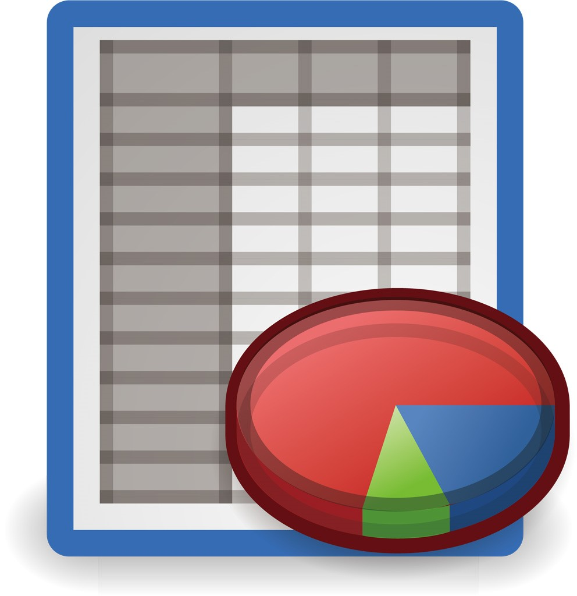

実装スキル
期間：2015年6月～2016年2月
開発人数：10人
開発言語：Java
作業の手順と期待値だけ聞いて作業をしていた
⇒目的や背景を理解せずに進めていた
⇒ミスを多く発生させていた
結果：上司から信頼されず、テスト以上の仕事を任せてもらえなかった
今のままではどのプロジェクトにも入れてもらえない
何か改善していかなければ給料がもらえなくなる
期間：2016年2月～2017年8月
開発人数：2人
開発言語：C++
作業開始前に作業の目的、背景まで考えてから進めるようにした
⇒作業の目的を把握できるようになった
⇒ミスが減った
結果：上司から信頼され、担当機能を任せてもらうようになる
期間：2016年8月～2017年1月
開発人数：2人
開発言語：HTML,CSS,JavaScript,Java
全プロジェクトで担当機能を実装した実績から多くの担当機能を任せてもらえるようになる
⇒コードをたくさん書いたり、必要なツールを見つけて実装した
⇒実装のスピードが向上した
結果：実装のスキルが向上した
生産性が向上した
⇒簡単な画面の実装(月43時間) から難しい内部の実装(月25時間)
生産性をより向上させる
⇒自宅で勤怠管理のWebアプリを開発してプログラミング能力を上げる
⇒ORACLE MASTER シルバー取得
品質を向上させる
⇒動くことを重視していたが可読性や可変性や処理効率を意識して行うようにする